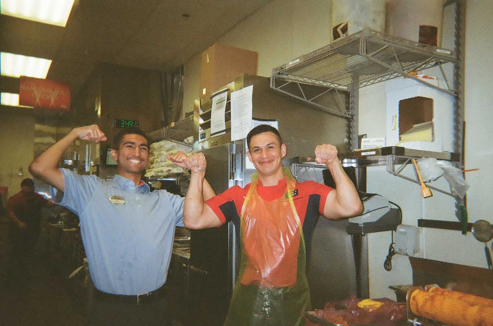
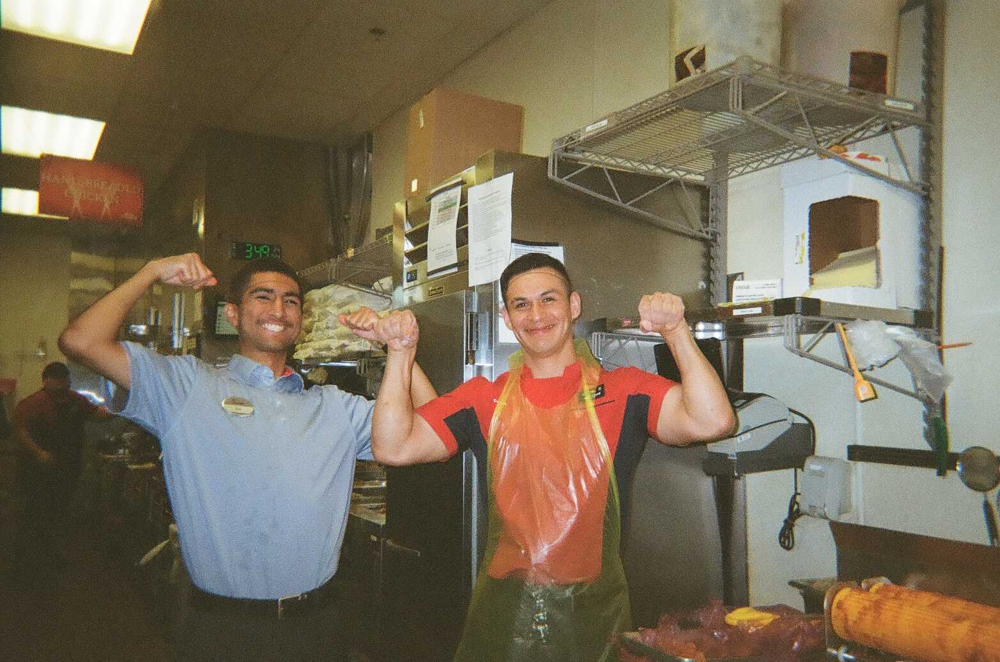
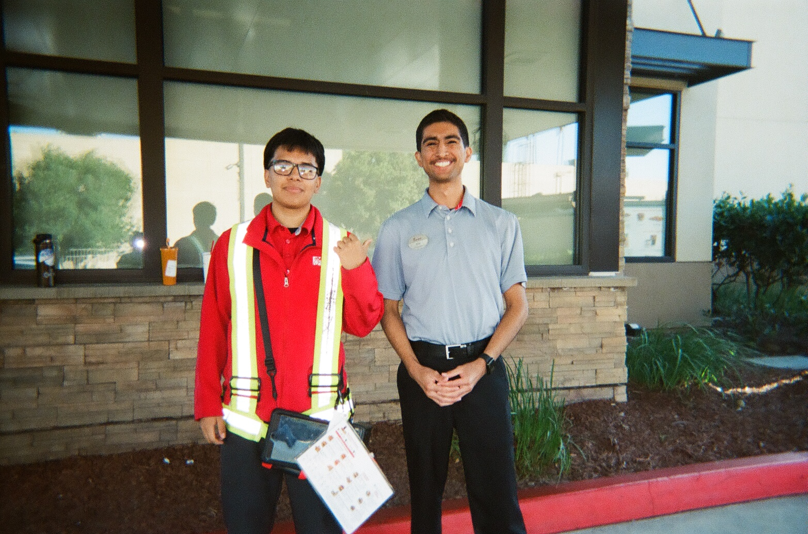
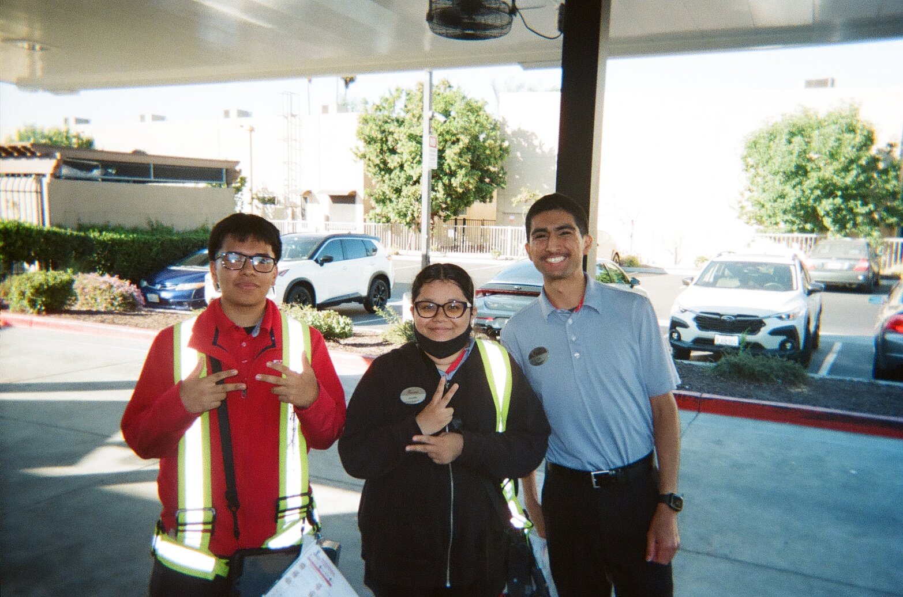
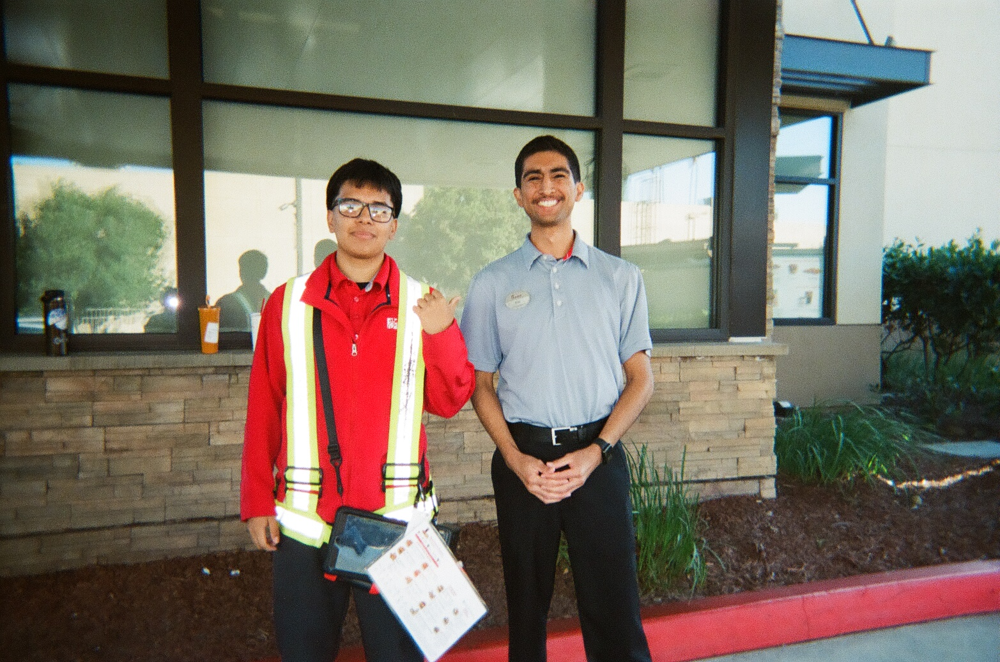
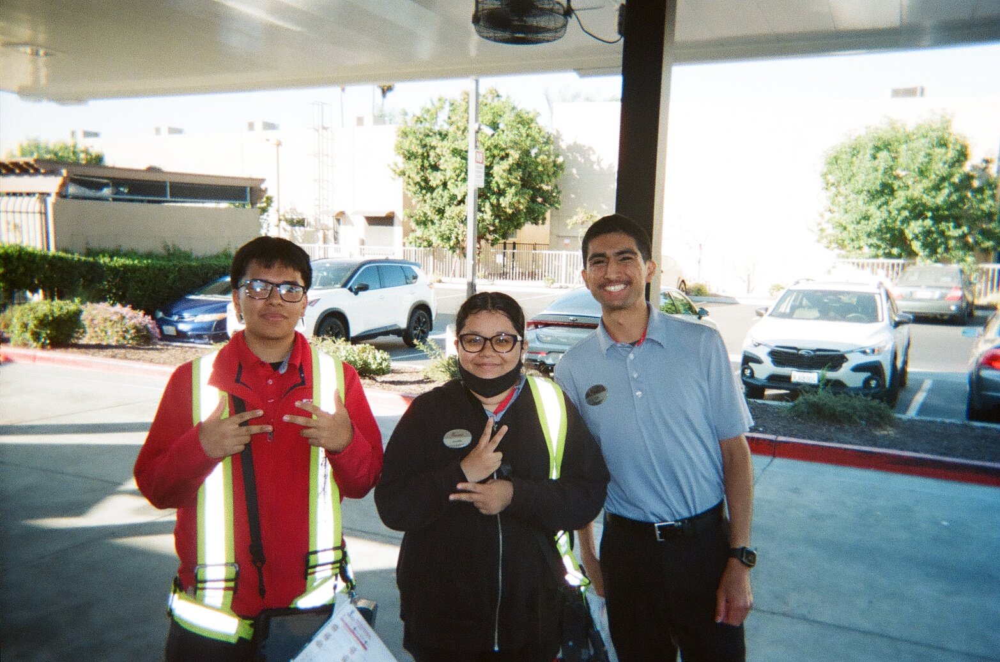
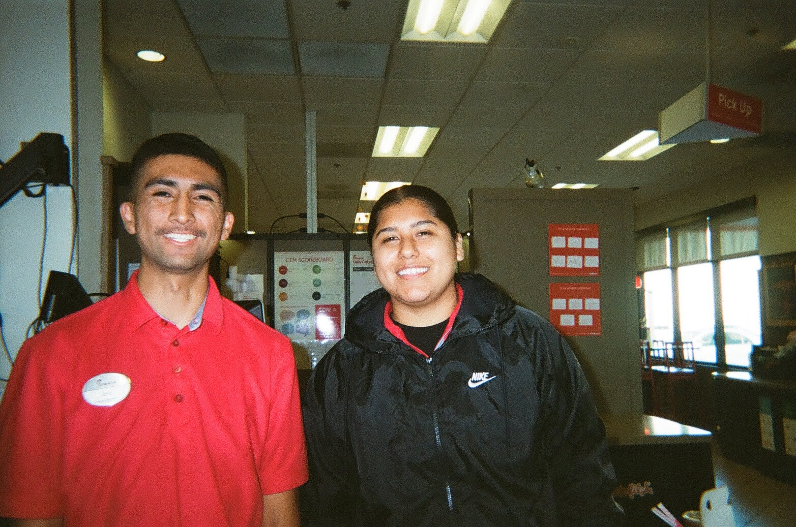
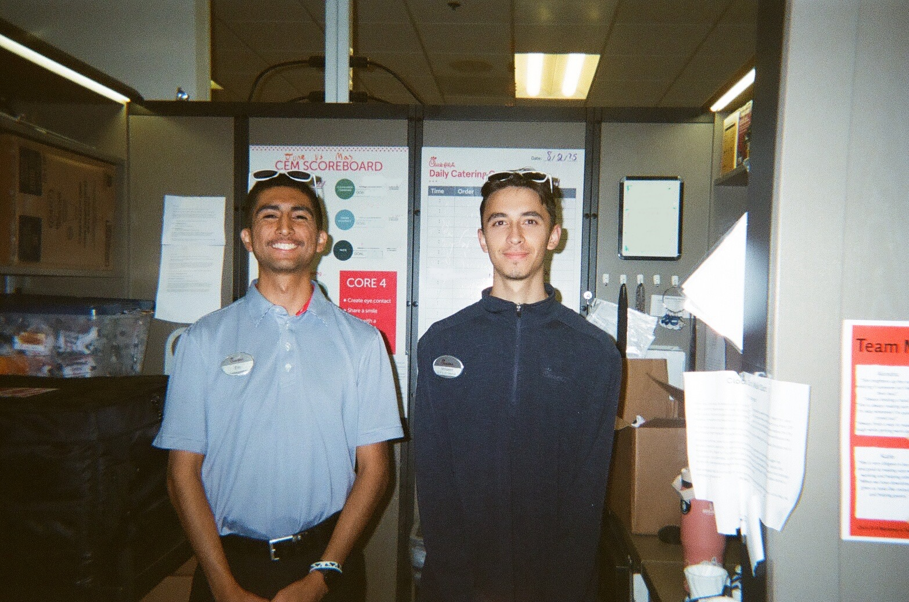
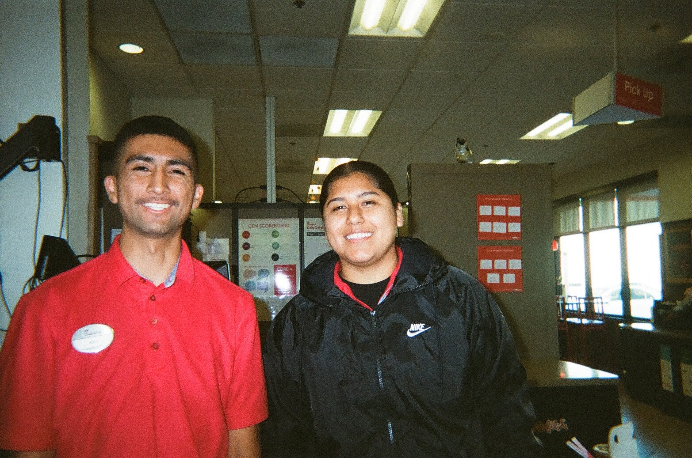
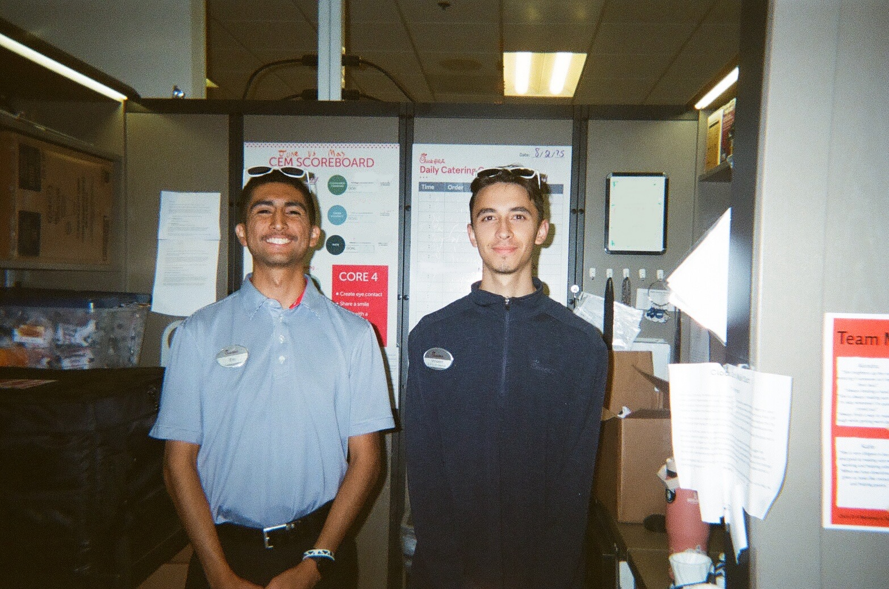

Hi there I’m Eric, a 25 year old practicing Catholic, computer science graduate from UC Merced, who currently works at Chick-Fil-A (I know give me a second to explain). A little about me, my current hobbies as of today are coding, learning about theology, and strength training. When I was 22 right before my last semester of college I encountered God and it changed my life. After college I got a job as a tutor/teacher teaching students how to code. After a year of teaching, for some reason I felt that God was calling me to work at Chick-Fil-A. So I made the radical decision to work at Chick-Fil-A. And honestly God knows what he’s doing because during my time here my virtues and fruits have grown and I’ve learned how to serve others. Another area where I’ve been growing is in my Catholic faith, such as learning about masculinity, Church teaching, Church theology. An accomplishment that I completed this year was reading the whole Bible. Then during my time here at Chick-Fil-A I’ve been coding. Trying to strengthen my coding skills/talent for God’s purpose. My aim is to get a Catholic engineering job, God willing. Thanks for reading, have a blessed day!
About Me
Faith
My Faith is important to me. It’s what keeps me going in life, without it I would be nothing. As said, I encountered God when I was 22 in the year 2022. It was a digital experience, by Instagram Reels. Interestingly enough these Reels were not Catholic content but more non-denominational content. So I started practicing a mix of sola scriptura and Catholic Tradition lifestyle. Since I grew up Catholic, Catholic Tradition was ingrained in me by catechism when I was young. During this early stage of my conversion I started to fall in love with the Bible and a sola scriptura faith seemed very interesting. When college ended I was really considering leaving the Catholic Church and going to any church that put more emphasis on the Bible. But by the grace of God more Catholic content started to appear in my Instagram feed. Found this app called Hallow, did their 40 day Lent challenge. Fully understood the meaning of the Eucharist. And during this time of discernment, of leaving the Church. I decided not to. There were 3 main reasons why: The Eucharist, Mary, and the Magisterium. Once I understood the Eucharist I gained more respect for the Catholic Church and knew they were the only one that can fully offer it. Mary, I just love her. I couldn't leave the Church knowing that I was leaving my heavenly mother. I love praying to her and almost felt like I was going to betray her if I left the Church. Then finally the Magisterium. To me it’s simple, people need authority without authority people go haywire. In the case of Christianity without the Magisterium followers of Christ can start believing their own Gospel. Ever since that lent I’ve been a practicing Catholic and I love it.
Currently my whole life revolves around my Faith. I picked up the habit of reading. With the “Bible in a Year” podcast I completed reading the Bible. That moved me to buy a Catechism, which I’m currently reading with the “Catechism in a Year” podcast. I recently started to dabble with this Catholic Young Adult group. My music taste is now cleaner. I love talking about theology. I never saw myself living this way, but now I can’t imagine living a life without God.
Coding
The first line of code that I ever wrote was in college. I went to UC Merced after high school. I chose Computer Science and Engineering as my major and realized that I enjoy coding. After learning and getting my degree at Merced. I got a job teaching children/teenagers how to code. This job made me really refine all my coding knowledge that I got from Merced to real life situations. My confidence in coding increased tremendously after working here. Currently my job doesn’t reflect coding, but I have been coding on my days off. During my extra time I’ve been learning html, css, and javaScript. All my learning came from Youtube, Google A.I., and trial and error. The most difficult learning curve was definitely javaScript especially canvas. I started this website after quitting my teaching job, and after many hours of learning this is the final product. The thing that took the longest were these games, especially Lunar Lander. The hardest part of making Lunar Lander were the collisions. Since the floor of the game involves angled lines trigonometry and linear algebra were necessary for a great collision detector. After much research, studying and implementation the separating axis theorem had to be used to detect angled collisions and it worked.
At the end of the day the reason why I kept coding these last few months is because I see a space of improvement in the Catholic digital scene. I know things need to be modernized. Many parishes/Catholic sites don’t have the best websites. I want to be part of that movement to digitize the Catholic space. It would be amazing to modernize the way the Gospel is spread by making the Catholic Church more digital. Since there was a lack of Catholic content when I was transitioning to Christianity. I hope I can change that by bringing digital Catholic content to the world.
This is tic tac toe. I created an algorithm where the enemy will try to make the player lose. The enemy will strategically place its marker where it reduces the chances of the player to win. Surprisingly this is a more advanced game I would teach at my old teaching job, mainly because of the data structures used and the enemy algorithm. The hardest part of making this game was learning javaScript while creating the game.
This is space invaders. This uses javaScript canvas. This was a very common game I would teach/code in my old teaching job. The enemies have an algorithm where they are chosen at random to start shooting. So every game the order of enemies shooting will be random.
The most difficult part of this game was making the hitbox, as well as learning canvas while creating the game. For this game and lunar lander I also used OOP for organization.
This is lunar lander. You have to land the spaceship on flat land at the right angle and speed. This was a more advanced game I would teach at my old job. This was the hardest game out of the three to make. This involves javaScript canvas. It involves trigonometry and linear algebra calculations. The hardest part was making the collision between the spaceship and the lines.
 

 




 




CFA
Alright this might be the part of my life that might seem out of line when it comes to an outside perspective. But there’s a reason why God put me here. I didn’t really know why at first but now that I reflect on it, it really makes sense. A lot of it is personal/spiritual growth. I can describe a few here. Communication skills was one of them. I have a speech impediment (stuttering) that sometimes makes it hard to have a normal conversation. Did it cure, no, but has it gotten better, yes. Working at Chick Fil A is a social job, so of course talking is necessary and it puts me in scenarios where I need to be more social. The end result is almost like speech therapy. The more I am social the less the speech impediment affects me. It’s almost like the more I talk the better my speech gets. Also, I met a coworker who was Christian but not Catholic and I had to learn Catholic apologetics to defend my faith. Learned and built a mindset to treat my coworkers and guests as children of God. As well as Humbling myself by entering a young workspace, putting myself in a vulnerable position of ageism, since I am a bit on the older side. Getting this job was about growing fruits and virtues, and I’m happy I took the decision to get the job.
GYM
During my time at Chick-Fil-A I picked up the hobby of going to the gym. Learned about hypertrophy, compound movements, and nutrition. So far I gained 10 pounds. After learning about Chrisitian masculinity during my time at Chick-Fil-A. I learned that every man should be strong. Not for vanity but using strength to be a provider and protector. Using my body for the glory of God and not for self. During my time of going to the gym I’ve dealt with injuries. Tore my left pectoral twice. I’ve always had sciatica problems since I was 14. But after going to physical therapy for my sciatica and persevering to get healthy again I didn’t give up and still kept going to the gym. The shirt in the photo is from a company called HolStrength a Christian gym apparel company, which I wear to the gym.